투혼 MTS 도움말
인증서 발급 / 재발급
안전한 거래의 시작,
인증서 관리부터
복잡한 인증 절차 없이,
공동인증서 하나만 있으면
로그인 · 주문 · 이체까지 척척
인증서 발급
⚠️ 스마트폰에서 새로 발급하면,
PC 인증서는 자동으로 사용 종료!
발급 전, 꼭 필요한 기기만 선택하세요. 💡
거래가 처음이라면 인증서가 필요해요!
인증서가 분실되거나 만료되더라도 새 인증서를
🔄 재발급하면 투혼을 계속 이용할 수 있어요.
- 전체메뉴
- 인증센터
- 인증서 발급/재발급
발급방법
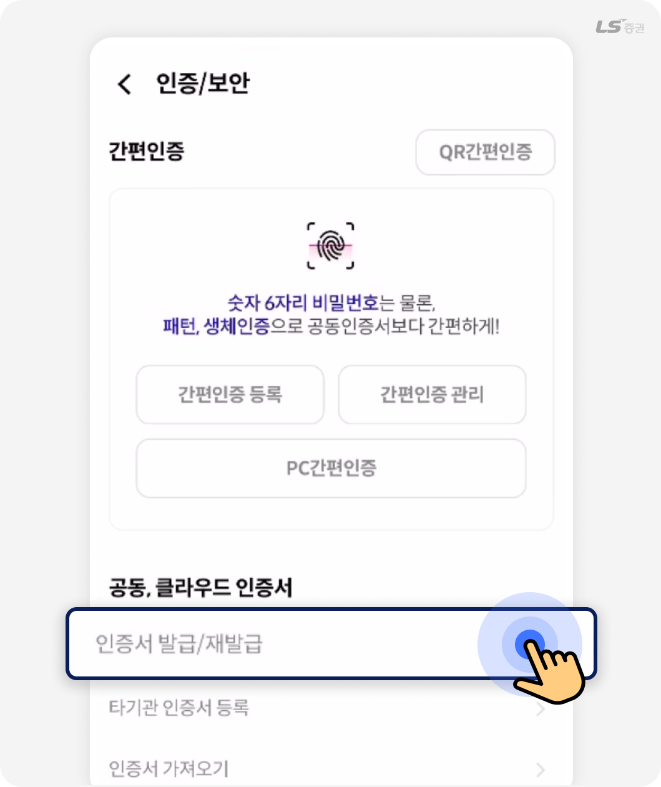
≡ 전체메뉴 - 인증센터에서 인증서 발급/재발급을 선택해 주세요.
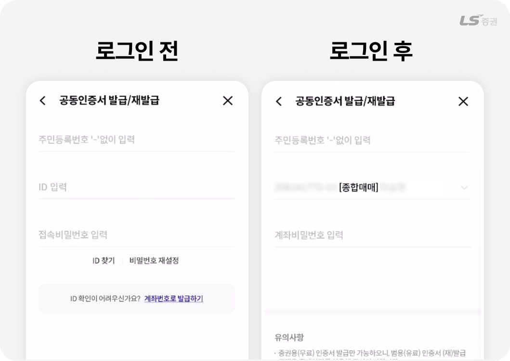
공동인증서 발급에 필요한 주민등록번호와 LS증권 회원정보를 입력해주세요.
TIP!
공동인증서 발급은 로그인 후 진행하면 더 편리해요.
로그인 전에는 LS증권 ID를 직접 입력해야 하지만,로그인하면 ID 입력 없이 등록된 계좌를 바로 선택해빠르게 발급할 수 있어요.
주의하세요!
다음의 경우에는 계좌를 조회할 수 없어요.
1) 모바일 서비스를 신청하지 않은 경우
2) 계좌가 통폐합된 경우
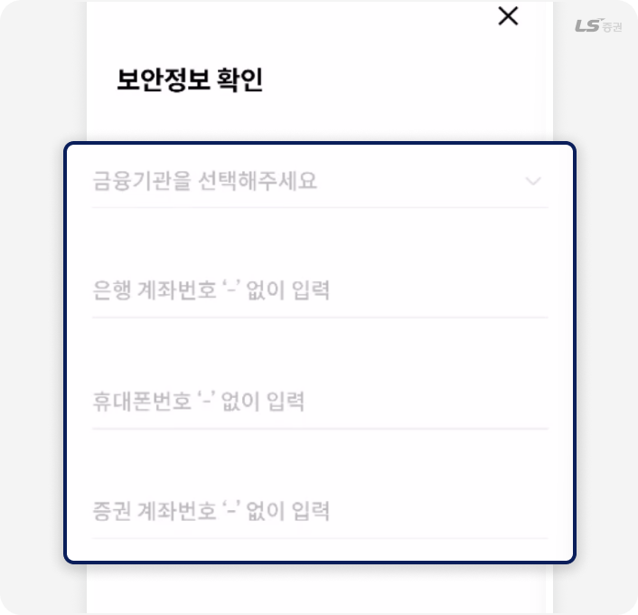
본인 인증을 위한 금융계좌정보, 휴대폰번호 등을 입력한 후 인증서 발급 및 본인인증 이용 약관에 동의 해주세요.
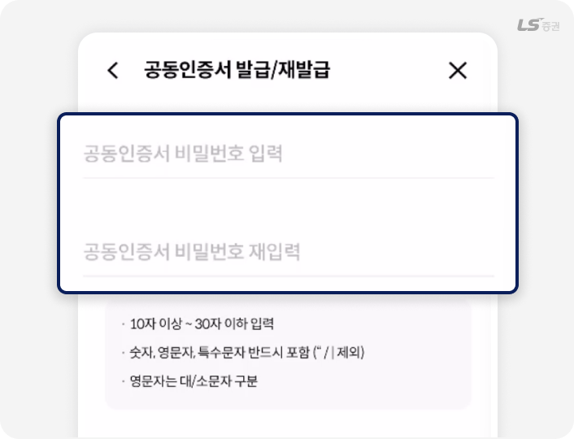
마지막으로 새 인증서 비밀번호를 생성하면 공동인증서 발급이 완료돼요.
TIP!
비밀번호는 10~30자 이내로 작성해 주세요.
숫자, 영문, 특수문자를 모두 포함해야 하며 ( “ / | 제외 ), 영문은 대소문자를 구분해주세요.
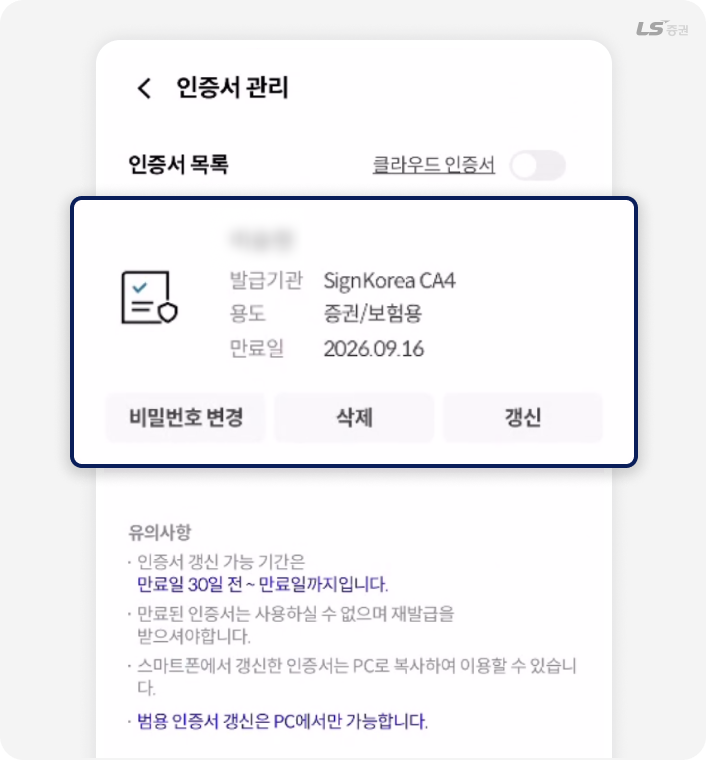
발급이 완료된 인증서는 ’인증서 관리’ 에서 확인할 수 있어요.
주의하세요!
LS증권 투혼 앱에서는 증권용 무료 인증서만 발급할 수 있어요. 범용 유로 인증서를 발급 또는 재발급하려면 LS증권 홈페이지를 이용해주세요.
인증서 가져오기
다른 기관에서 발급받은 인증서가 있는데
LS증권은 처음 이용하시나요?
인증서 가져오기를 이용하면 기존에 발급받은
인증서를 PC에서 휴대폰으로 가져와 그대로
사용할 수 있어요. 💡
- 전체메뉴
- 인증센터
- 인증서 가져오기
발급방법
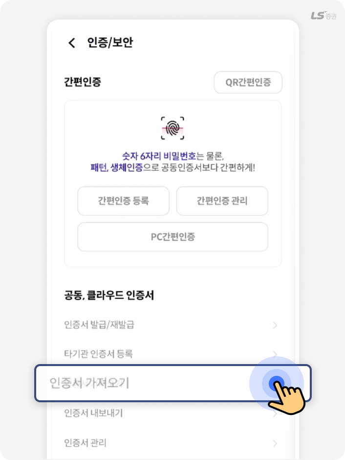
≡ 전체메뉴 - 인증센터에서 인증서 가져오기를 선택해 주세요.
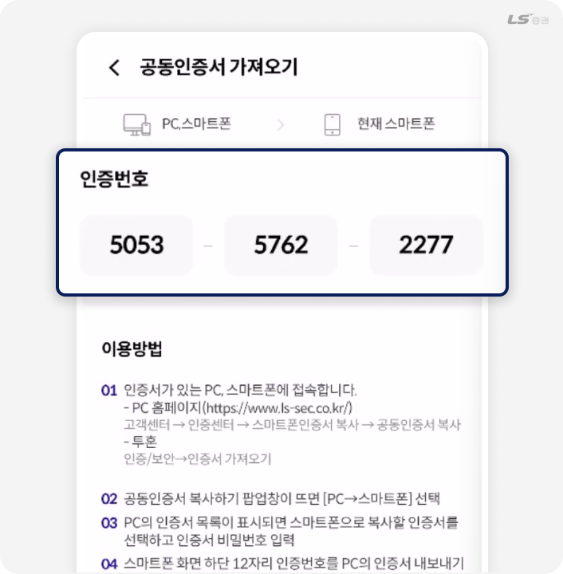
화면에 표시된 인증번호를 메모해 주세요.
이 번호는 PC에서 인증서를 전송할 때 필요해요.
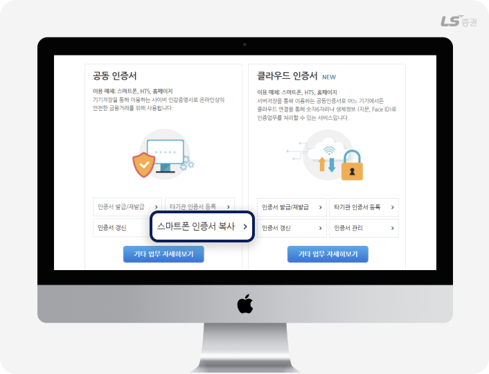
LS증권 홈페이지(https://www.ls-sec.co.kr)에 접속한 후, 고객센터 - 인증센터 - 인증센터 홈 - ’스마트폰 인증서 복사’ 버튼을 선택해주세요.
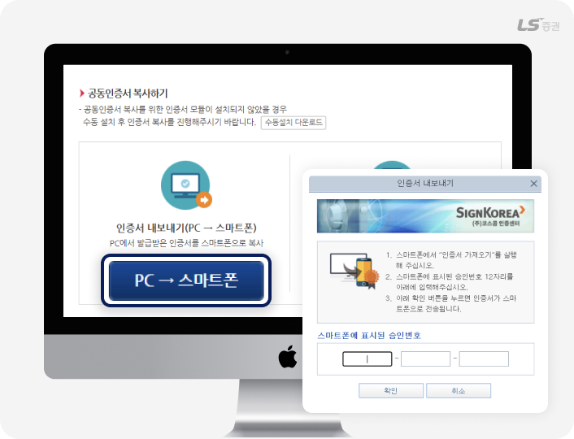
‘공동인증서 복사(PC→스마트폰)’ 버튼을 선택한 뒤, 은행 등 타기관에서 사용중인 공동인증서 비밀번호를 입력하고 투혼 앱에서 메모한 12자리 인증번호를 입력해주세요.
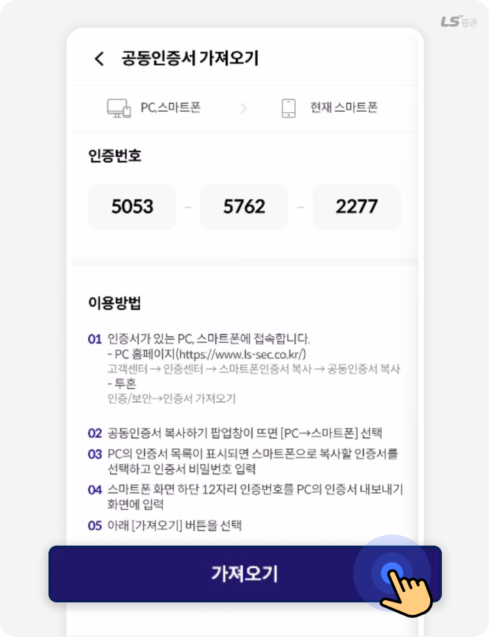
마지막으로 앱으로 돌아와 ‘가져오기’ 버튼을 누르면 공동인증서 가져오기가 완료돼요.
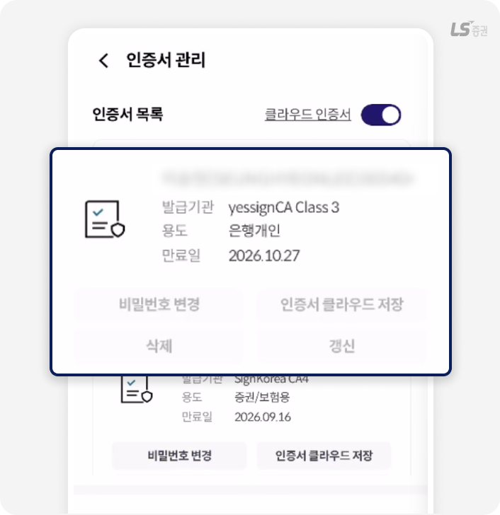
복사한 인증서는 ≡ 전체메뉴 - 인증센터 - ‘인증서 관리’에서 확인할 수 있어요.
TIP!
인증서가 등록되지 않는다면, 먼저 인증서 종류를 확인해보세요. 은행 전용(무료) 인증서는 LS증권 앱·홈페이지·HTS에서 사용할 수 없어요.
범용 유료 인증서 또는 증권 전용 인증 (SignKorea)만 등록 가능해요.
인증서 내보내기
LS증권 앱에 등록된 인증서를
다른 기기에서도 사용하고 싶다면 ✨
‘인증서 내보내기’ 기능을 이용해보세요.
휴대폰에서 인증서를 안전하게 전송하면,
PC에서도 새로 발급받지 않고
바로 로그인하고 거래할 수 있어요. 💡
- 전체메뉴
- 인증센터
- 인증서 내보내기
발급방법
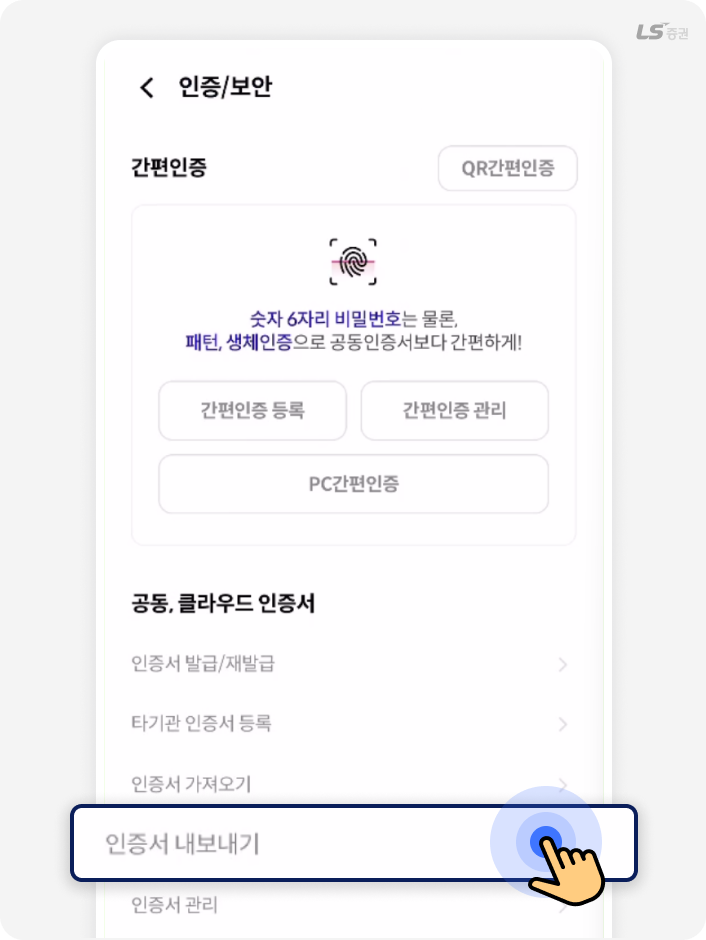
≡ 전체메뉴 - 인증센터에서 인증서 내보내기를 선택해 주세요.
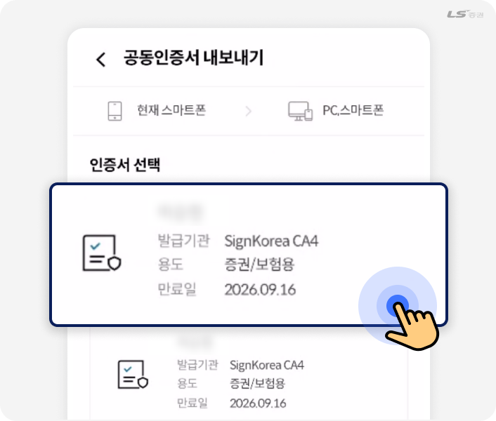
내보낼 공동인증서를 선택한 뒤, 공동인증서의 비밀번호를 입력해주세요.
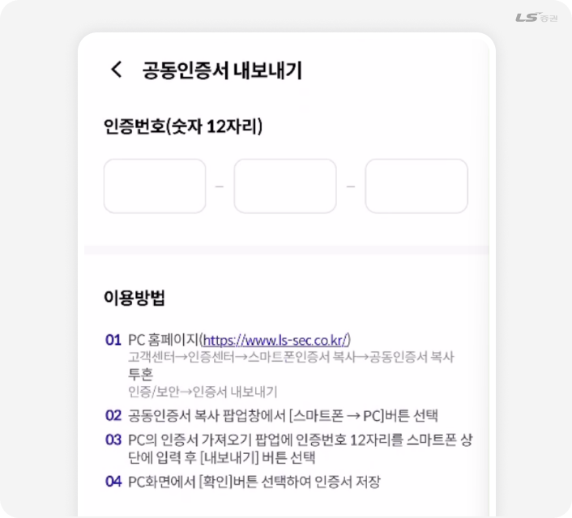
공동인증서 내보내기를 위해 인증번호 12자리 입력이 필요해요.
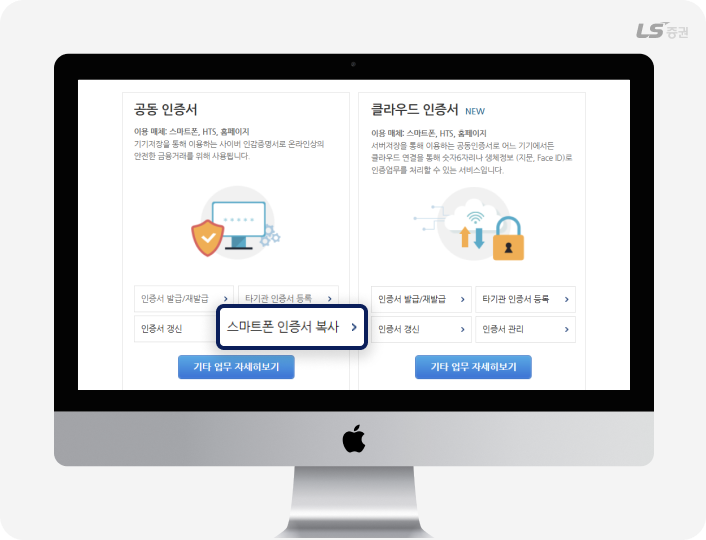
LS증권 홈페이지에 접속한 후, 고객센터 - 인증센터 - 인증센터 홈 - ’스마트폰 인증서 복사’ 버튼을 선택해주세요.
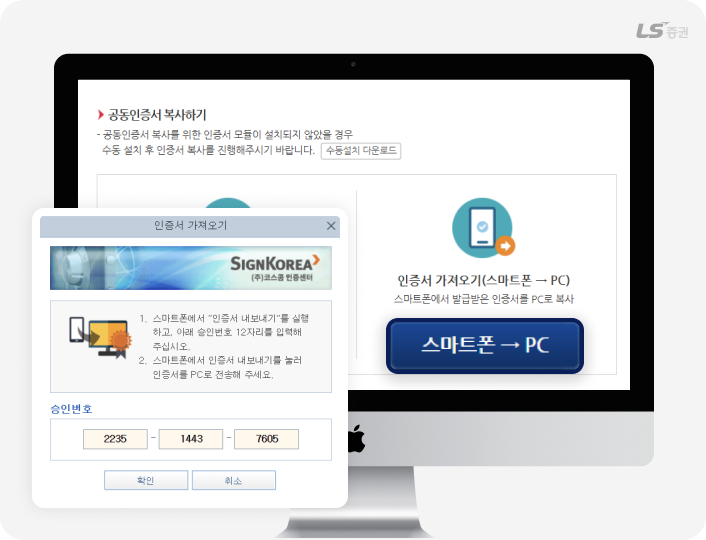
‘공동인증서 복사(스마트폰→PC)’ 버튼을 누른 뒤, 화면에 표시된 인증번호를 MTS에 입력하면 인증서 내보내기가 완료돼요.
타기관 인증서 등록
다른 금융사에서 받은 인증서가 있다면
🔑 LS증권에서도 그대로 사용할 수 있어요.
‘타기관 인증서 등록’ 메뉴에서
간단히 등록해보세요.📱
- 전체메뉴
- 인증센터
- 타기관 인증서 등록
등록방법
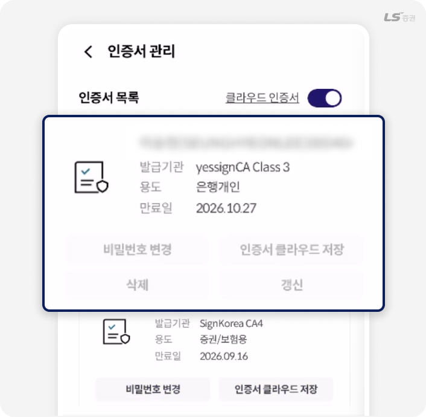
타기관 인증서 등록을 위해, 먼저 인증서 가져오기를 진행해 주세요.
(인증서 가져오기 도움말을 참고해주세요.)
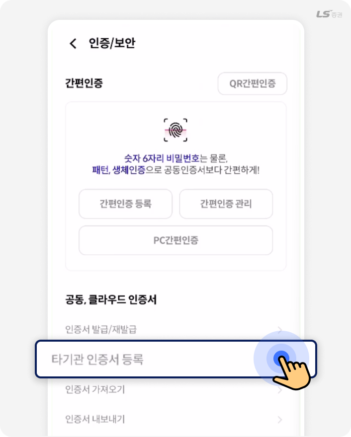
인증서 가져오기를 완료한 후, ≡ 전체메뉴 - 인증센터에서 기관 인증서 발급/재발급을 선택해 주세요.
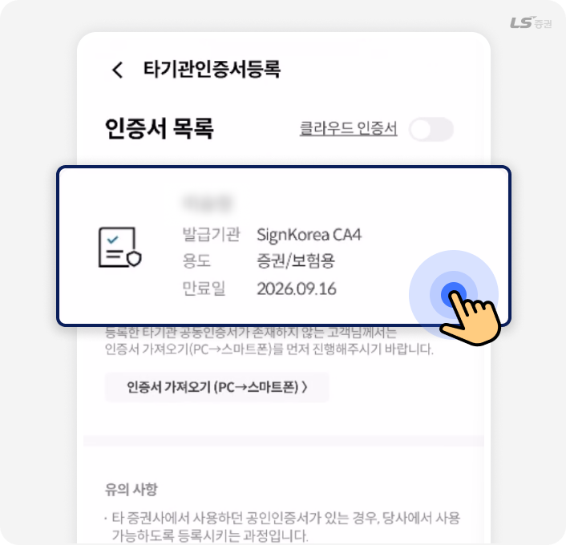
타기관에서 발급한 여러 개의 공동인증서 중 타기관인증서를 등록할 공동인증서를 선택해 주세요.
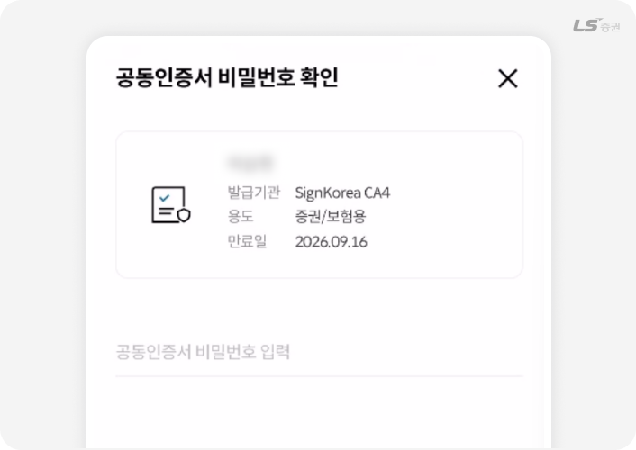
타기관에서 발급받은 공동인증서의 비밀번호를 입력해 주세요.
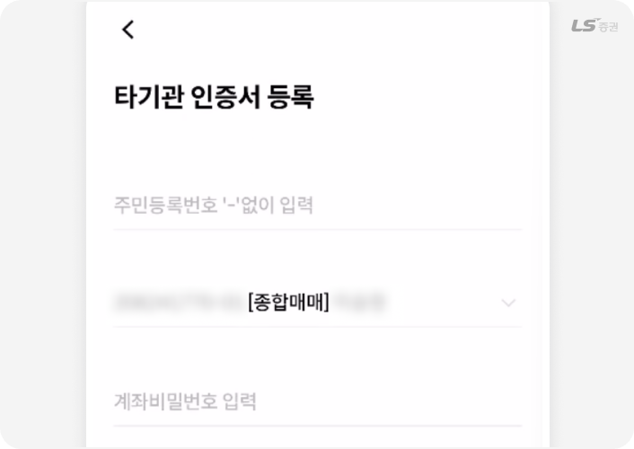
타기관 인증서등록에 필요한 주민등록번호와 LS증권 회원정보를 입력해주세요.
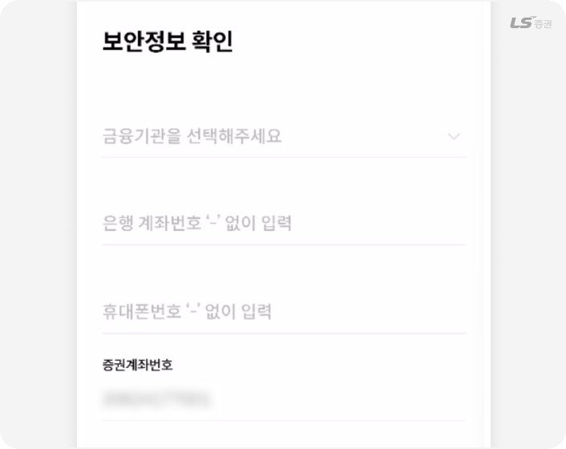
본인 인증을 위한 금융계좌정보, 휴대폰번호 등을 입력한 후 인증서 발급 및 본인인증 이용 약관에 동의하면, 타기관 인증서 등록이 완료돼요.
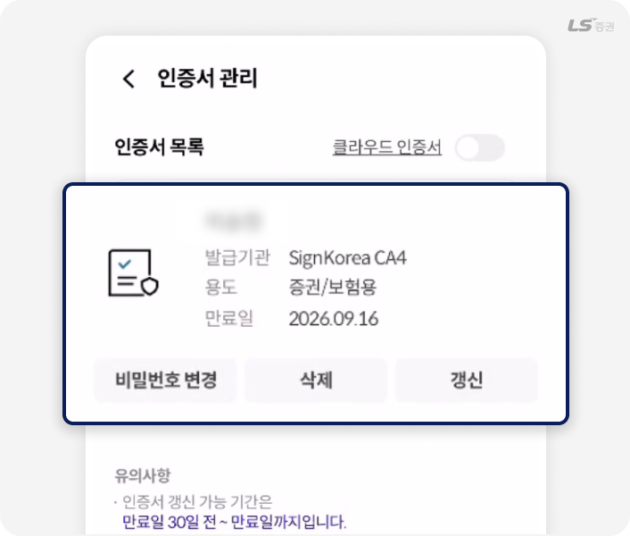
등록이 완료된 타기관인증서는 ’인증서 관리’에서 확인할 수 있어요.
TIP!
계좌번호가 보이지 않는 경우 ‘모바일 서비스’를 등록해야 해요.
클라우드 인증서
인증서를 ☁️ 클라우드에 보관하면,
투혼 앱 · WTS · HTS 모두 바로 사용할 수 있어요. 🙌
기기를 바꾸거나 분실하더라도 걱정 뚝!
간단한 본인 확인만 거치면
바로 로그인할 수 있어요.
- 전체메뉴
- 인증센터
- 타기관 인증서 등록
- 클라우드 인증서
등록방법
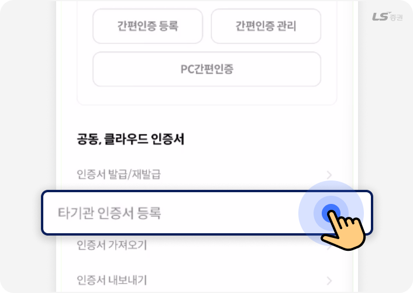
≡ 전체메뉴 - 인증센터에서 타기관 인증서 등록을 선택해 주세요.
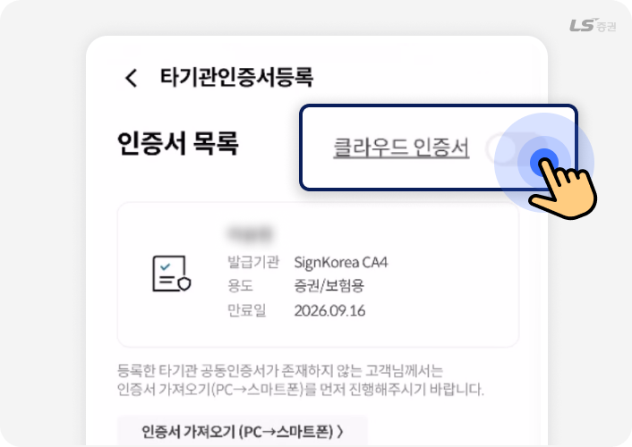
타기관인증서등록 화면에서 상단에 클라우드 인증서를 선택해주세요.
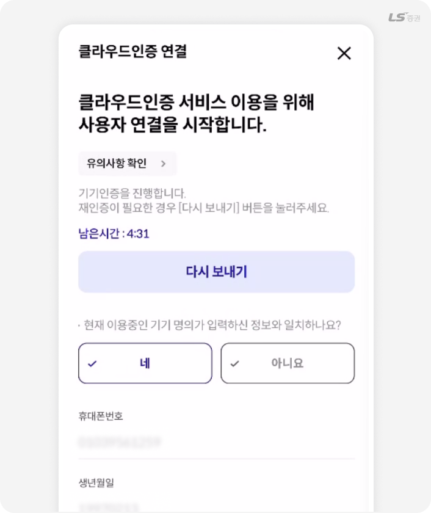
클라우드인증을 위해 개인정보 입력과 기기인증을 진행해 주세요.
TIP!
클라우드 인증 서비스 연결 과정에서 인증용 문자(SMS)가 자동 수신돼요. 수신한 문자를 그대로 회신한 뒤, 서비스 화면으로 돌아와 주세요.
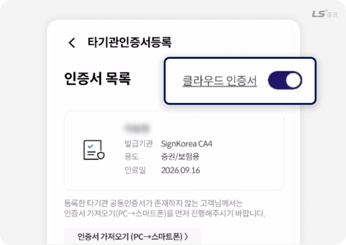
클라우드 인증서 등록이 완료되면, 클라우드 인증서 사용 버튼이 자동으로 활성화돼요.
TIP!
최초 1회만 인증하면 탈퇴 또는 휴면 전까지 클라우드 인증서 연결이 유지돼요.
다만, 기기 변경이나 앱 삭제 · 재설치 후에는 다시 연결해야 해요.
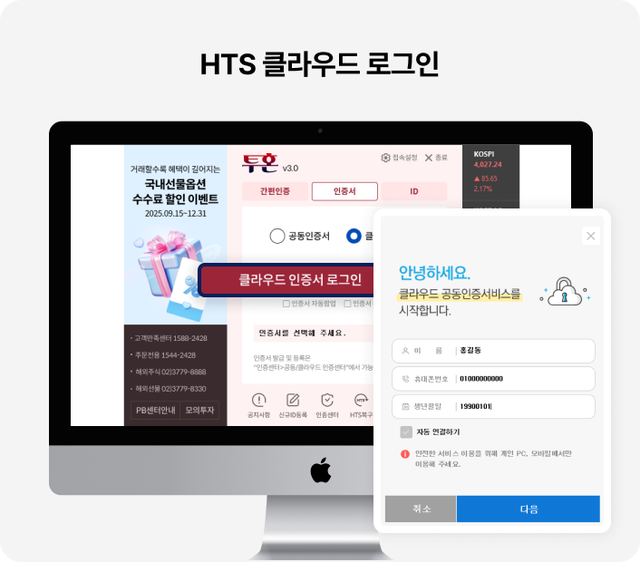
번거로운 인증서 발급 과정 없이 클라우드 인증서로 한 번에 로그인하고 거래해요!
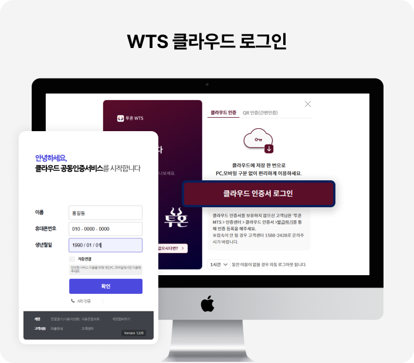
인터넷만 연결돼 있다면, 언제 어디서든 웹을 통해 WTS에서 거래할 수 있어요!